ABSTRACT: Affordance understanding is essential for enabling intelligent agents to interact with objects in real-world environments. However, existing methods rely on high-quality 3D observations or assume homogeneous input modalities, limiting their applicability when inputs are heterogeneous and 3D geometry is degraded by noise, sparsity, and occlusion. In this work, we propose RoMAP, a multi-modal affordance prediction framework that unifies RGB images and 3D point clouds for reliable language-guided affordance reasoning under degraded observations. Specifically, we introduce a mask-guided 3D Gaussian splatting module that reconstructs geometry-consistent object-centric representations from RGB observations, enabling cross-modal geometric perception. Furthermore, we propose two complementary degradation-aware modules: adaptive noise filtering and sparse point enhancement, which improve representation stability against noisy and sparse point clouds. Finally, a language-guided decoder is designed to establish fine-grained semantic-geometry alignment for affordance grounding conditioned on textual queries. Experiments on multiple benchmarks show that RoMAP outperforms existing methods under both clean and degraded conditions, with consistent gains in affordance localization accuracy across diverse input modalities.
Motivation
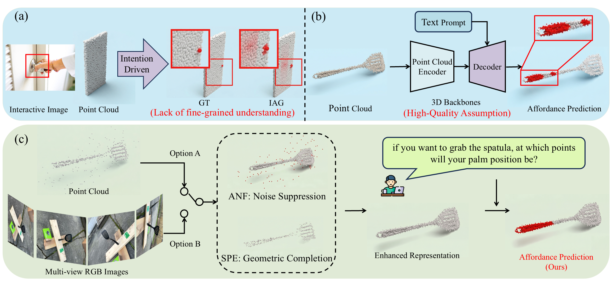
(a) While existing cross-modal methods leverage 2D interactive cues (e.g., a grasping hand) to infer semantic intent, they struggle to establish strict semantic-geometric alignment, yielding diffuse predictions rather than precise 3D localization. (b) Similarly, conventional language-guided 3D methods rely on high-quality geometry and fail on noisy or sparse data. (c) Our RoMAP framework flexibly handles multimodal inputs, including 3D point cloud (Option A), multi-view RGB image (Option B) and language instructions. By addressing noise and sparsity via the ANF and SPE modules, it achieves robust and precise affordance grounding.
Method Overview
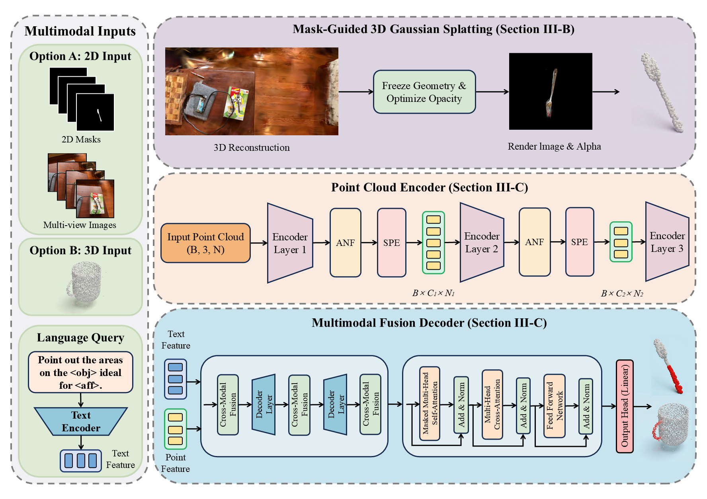
The model takes multimodal visual inputs and natural language queries to predict 3D functional affordances. (Top) For 2D image inputs (Option A), a Mask-Guided 3D Gaussian Splatting module segments the target object from the background to reconstruct clean, object-centric point clouds. (Middle) The reconstructed representations (Option A) or native 3D point clouds (Option B) are fed into a Degradation-Aware Feature Enhancement encoder, where the ANF achieves uncertainty-aware feature stabilization, and the SPE performs structure-aware geometric completion. (Bottom) The Language-Guided Semantic Fusion and Prediction module fuses point features with text queries to output affordance masks.
Self-Captured Real-World Demonstrations

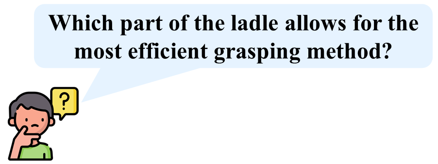
Given multi-view RGB images and natural language instructions, our framework reconstructs the 3D object point clouds and accurately predicts the target functional regions (highlighted in red). These results demonstrate the model's practical utility in identifying affordances, such as the ideal grasp spots for an adjustable wrench (a) and a ladle (b), even in the presence of reconstruction noise.
Comparison on HANDAL Dataset
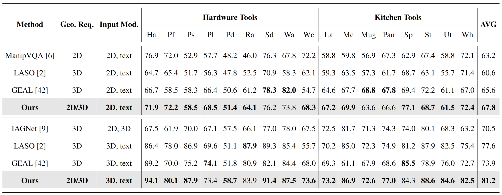
Comparison of affordance prediction performance (aIoU) on the HANDAL dataset. Best results are in bold. Geo. Req. denotes the original geometric input form designed for each method. Input Mod. represents the input modalities under each evaluation setting. Specifically, the upper and lower groups use reconstructed and native clean point clouds, respectively. See Section IV-B for category abbreviations.
Qualitative Results
 <Vase>
<Vase> <Pour>
<Pour>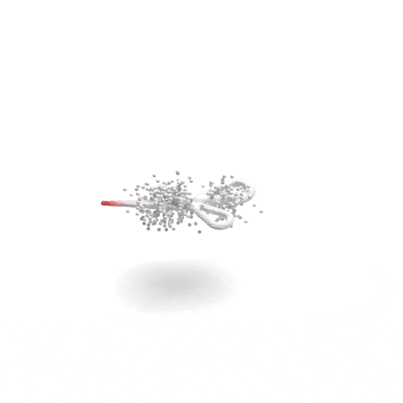
<Scissors> <Table>
<Table> <Move>
<Move>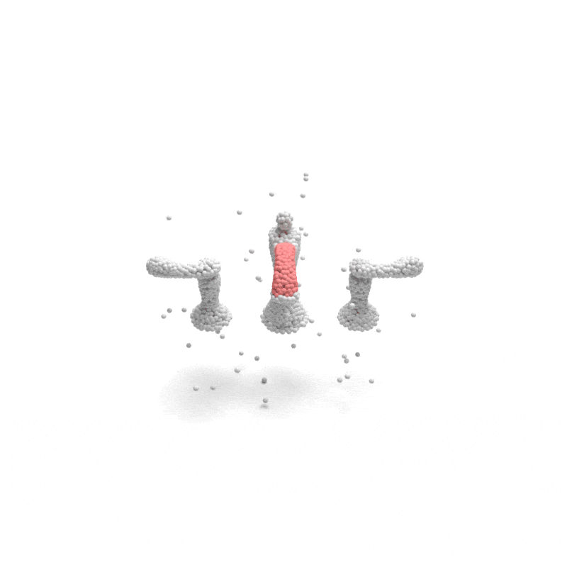
<Faucet>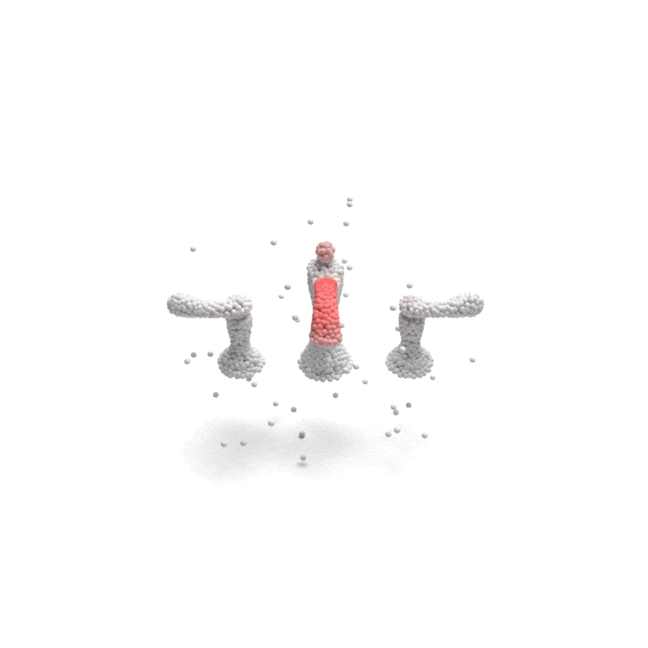
<Grasp> <Chair>
<Chair> <Move>
<Move>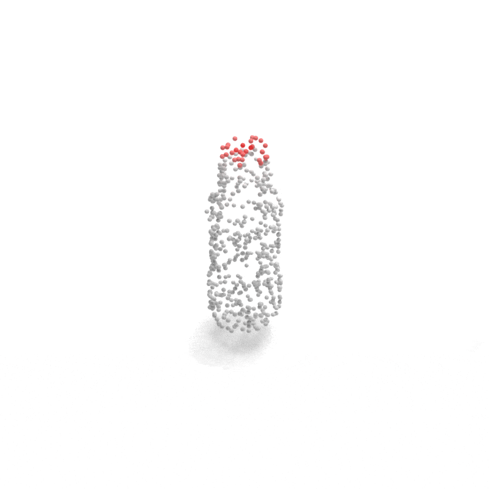
<Bottle>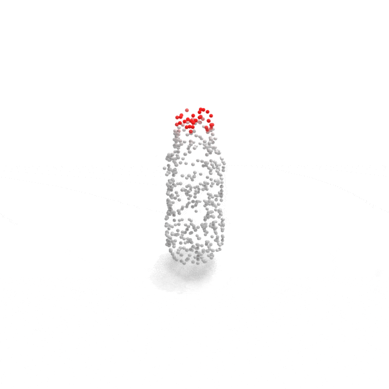
<Open>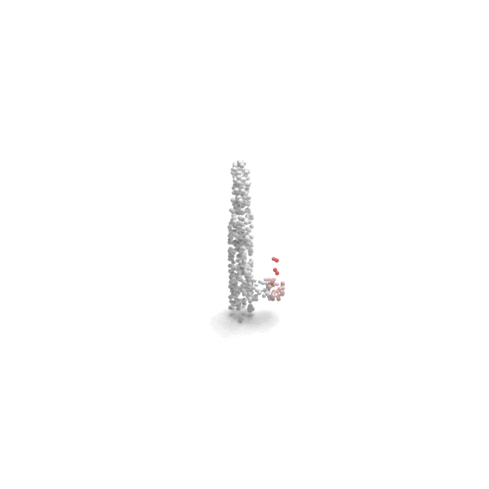
<Faucet>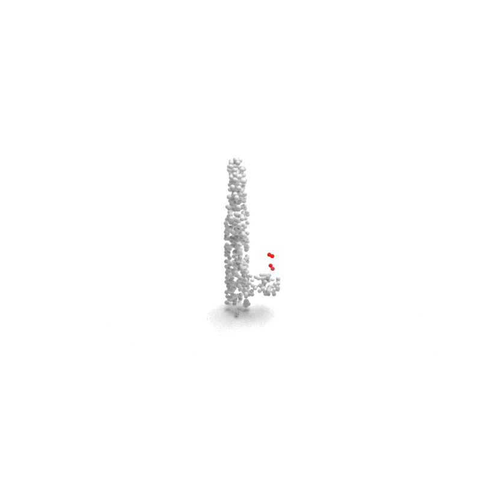
<Open>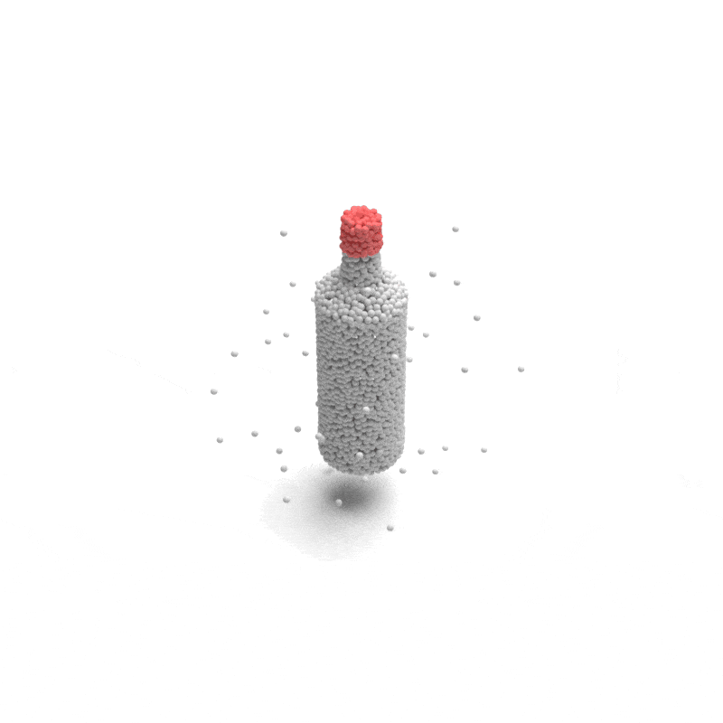
<Bottle>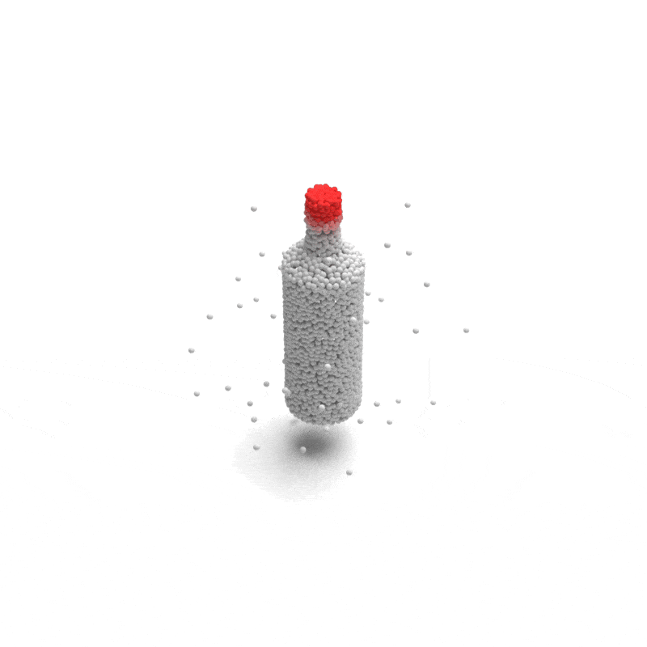
<Open>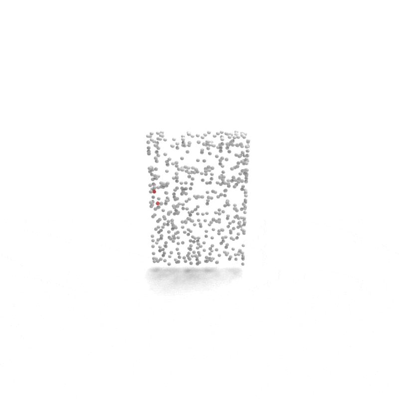
<Door>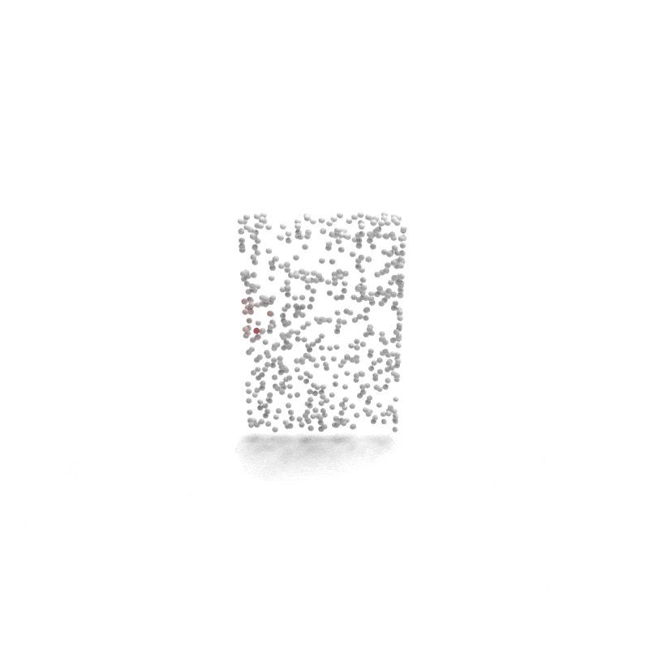
<Pull>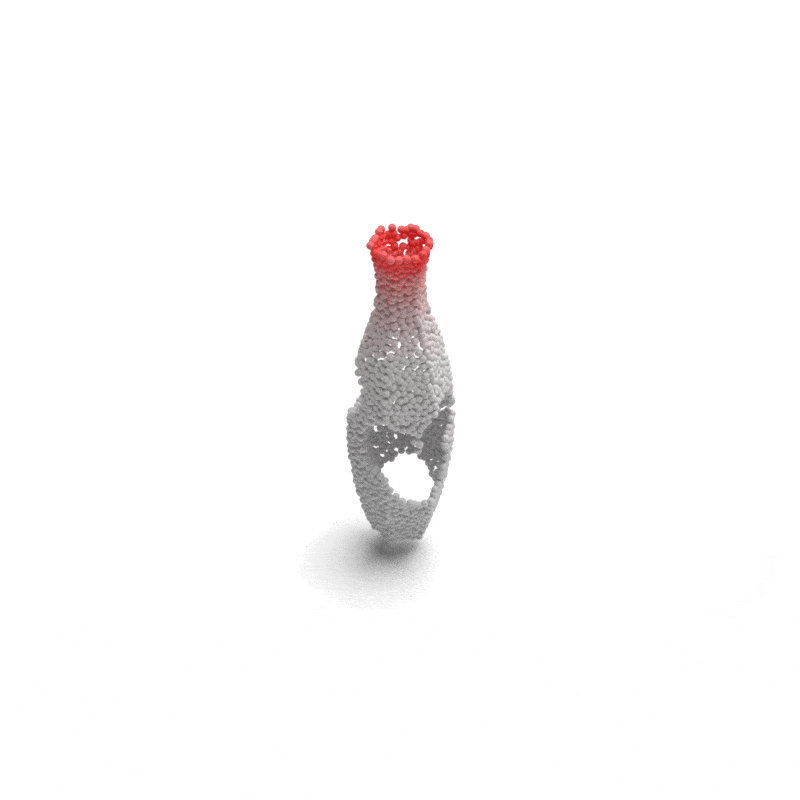
<Vase>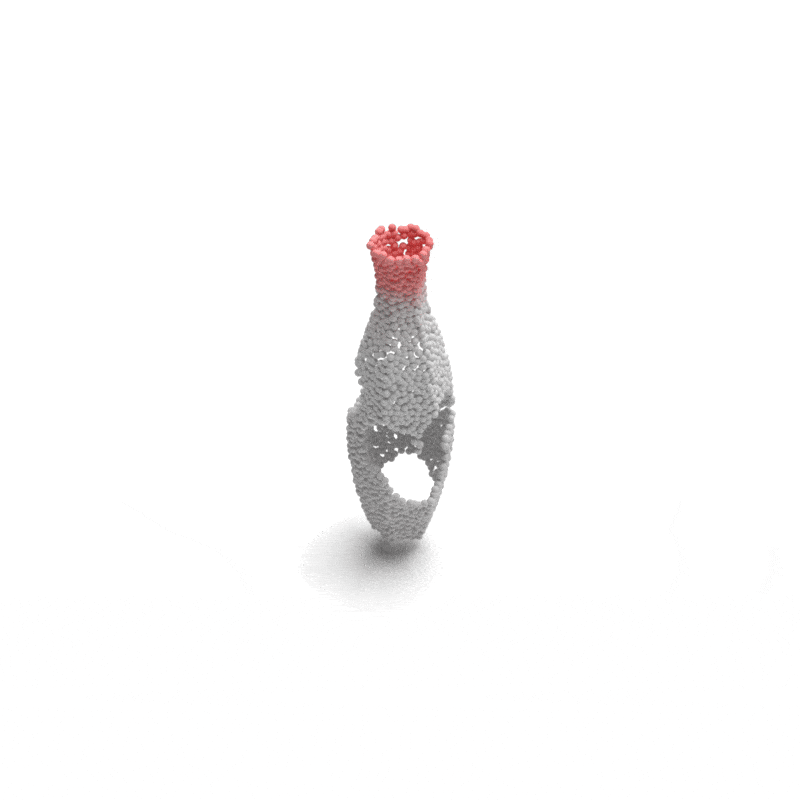
<Pour> <Chair>
<Chair> <Sit>
<Sit> <Mug>
<Mug> <Grasp>
<Grasp> <Earphone>
<Earphone> <Grasp>
<Grasp> <Vase>
<Vase> <Wrap>
<Wrap> <Chair>
<Chair> <Move>
<Move>Qualitative robustness evaluation on the LASO-C dataset. For each degradation type, we compare the Ground Truth affordance mask (left) with our model's prediction (right), both highlighted in red.